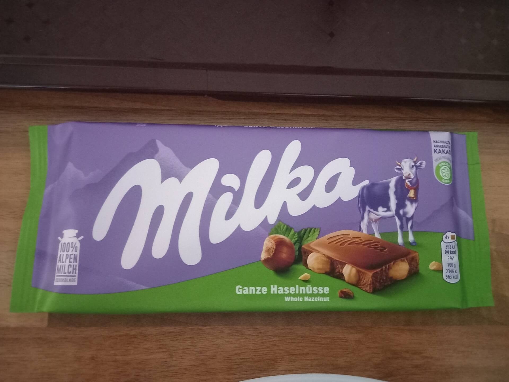

Egy kis segítség azoknak a kezdő programozóknak, akik elakadnak és segítséget szeretnének kérni. Ezekkel a
tippekkel elkerülheted, hogy fórumokon kinevessenek vagy elküldjenek melegebb éghajlatra. :)
Ha elakadsz:
Ne kérj rögtön segítséget, előbb próbáld magad megoldani. Ha nem megy, a google a barátod, keresgélj fóumokon. Ha
van hibaüzenet írd be azt. Szinte biztos, hogy valaki előtted már belefutott ilyen hibába. Ha szorít az idő, akkor
ne tölts ezzel túl sok időt (mondjuk órákat, napokat, viszont ha ráérsz nem árt ha magad próbálkozol egy ideig)
Ha már egy ideje nem sikerül magadtól megoldani a problémát és a neten se találtál rá megoldást jöhet a
segítségkérés. De nem mindegy hogyan! Jusson eszedbe, hogy akik segítenek neked ingyen teszik és az ő idejüket
rabolod vagy őket szakítod félbe munka közben. Ugyanakkor vannak, akik szívesen segítenek olyanoknak akik tudják,
hogy kell tisztelettudóan segítséget kérni, úgy, hogy ne rabolják az ember idejét.
1. Minél részletesebben fogalmazd meg, hogy mit és hogyan próbálsz elérni és hogy miért nem sikerül. Legyen benne
a szándékod, a tech, amivel dolgozol és a hibaüzenet ha van. Ha csak bizonyos esetekben jelentkezik a hiba, mondd
el, milyen lépések kellenek a hiba reprodukálásához.
pl: olyan kódot szeretnék írni ebben és ebben a programnyelvben ami ezt és ezt csinálja, de a következő
hibaüzenetet kapom ha ezt és ezt csinálom
2. Írd le, hogy eddig milyen lehetséges megoldásokat próbáltál ki. Lehet, hogy akitől segítséget kérsz sem fogja
tudni első blikkre megoldani és neki is próbálkoznia kell. Ilyenkor jó, ha pár lehetőséget már kizársz és azokkal
sem kell időt pazarolnia.
3. Oszd meg a kódot azzal, akitől segítéget kérsz, méghozzá mindent ami ahhoz kell, hogy megfelelően fusson.
Lehet, hogy a kódbázisodnak egy olyan része befolyásolja a nem működő részletet amire nem is gondolnál, szóval
akár az egész projectet is megoszthatod ha lehetőséged van rá. Semmiképp se csak azt az adott sort vagy adott
függvényt oszd meg, ami nem működik ha más tényezők is közre játszhatnak. És mindenképp szerkeszthető formában
oszd meg a kódot, ne csak screenshotot adj! Így aki majd a segítségedre siet tud próbálkozni a kóddal (GitHub,
CodePen, stb...)
Említettem, hogy napirendet követek és hogy könyű dolgom volt a délutános hetemen, de a többin nehezebb lesz. Nos a délelőttösön is sikerült minden nap felkelni még kb az éjszaka közepén és programozni munka előtt, szóval eddig nagyon elégedett vagyok ezzel a rendszerrel. Igaz, hogy szerda ünnepnap volt és akkor pihentem. :)
Tegnapelőtt egy társaságban említettem, hogy szüleim majdnem adtak nekem egy nagyon szokatlan, furcsi nevet. Ezt heves találgatás követte és már untam a válaszolgatást úgyhogy automatizáltam ezt a feladatot. Ez annyit jelent, hogy a "Guess the name" nevű app felkerült a Teszt Laborba.
Egy időben mértem, hogy mennyit sikerül programoznom és heti 6 óra volt az átlag. Tízzel már ki lettem volna békülve, de csak egyszer sikerült elérnem, viszont azon a héten sok szabadnapom volt. Nos, múlt héten megint megpróbálkoztam egy napirend betartásával és össze is jött a tíz óra, ráadásul a hétvége nélkül. Igaz, hogy az egy könnyű délután dolgozós hét volt, mikor nem kell annyira korán kelni és lehet éjjel aludni. A többin nehezebb dolgom lesz, most is azért postolok hajnalok hajnalán, mert munka előtt jobban megy a programozás és ezen a héten 6-ra megyek dolgozni. Minden esetre örülök, hogy eddig sikerült betartani a rendszert és haladni dolgokkal.
Múltkor, mikor kollégám tesójának segítettem rájöttem, hogy mennyire jó React-tel dolgozni a vanilla JavaScript-hez képest. Már egy ideje React-et használok, de eddig nem tudtam értékelni, hogy mennyire jó mindent külön komponensként kezelni. Aztán múltkor ráeszméltem, hogy mennyi probléma van a JS-es DOM manipulálással, ahogy régen én is szoktam csinálni. Minden egy helyen van és ha változtatok valamit befolyásol más dolgokat is. Minden változtatásnál rá kellett eszmélnem, hogy jaj akkor ez szétcseszte azt, azt fixáltam, ami aztán szétcseszte amazt...
Történt valami január 9.-én, amiről elfelejtettem postolni. Életemben először fizetséget kaptam programozásért.
:D
Oké... valójában csak segítettem kollégám tesójának a vizsgamunkájval, mert kicsit túl komplex feladatot vállalt
magára és hálából kaptam egy csokit. :)

Már két hét eltelt az új évből, szóval kicsit meg vagyok késve a tavalyi év végi értékelővel. Mióta a
webfejlesztős kurzusos oldalon dolgozgatok elég ritkásan írtam, mert arról annyira nem akarok infókat
kiszivárogtatni. :D Sajna a Github-omon se látják külső szemlélők, mert privát repo-ban van. Ezért nem szeretem ha
valaki a Github-os aktivitás alapján véleményt alkot fejlesztőkről. Na mindegy...
Az új év első hetében nem dolgoztam, ezt az időt programozással szerettem volna tölteni, de sajnos végig beteg
voltam. Múlt héten pedig délelőttös hetem volt a munkahelyemen, úgyhogy örültem, hogy túléltem a hetet. Ilyenkor
soha sincs energiám semmire a korán kelés miatt, csak zombulok egész héten. Ma volt az első igazán produktív napom
idén.
Na de elvileg az elmúlt évet illene most értékelnem. Mindent egybevetve kész csoda, hogy csinálom még a
fejlesztést, sokszor elbizonytalanodtam. Plusz, ahogy a tavalyi utolsó postban is említettem elég nehéz év volt
nekem. Az mindenképp sokat segített, hogy rátaláltam a mentoromra egy Facebook csoportban. 2022 második felében
kezdtem el React-et tanulni. Én valamiért azt hittem, hogy viszonylag gyorsan megy majd az elsajátítása, de csak
most érzem úgy, hogy viszonylag kényelmesen mozgok benne. Persze még mindig jócskán van, hova fejlődni, de
legalább már talán nem akadok el alap dolgokon.
Tavaly alig volt blog post, sokszor sajnáltam is rá az időt és inkább haladtam valami project-tel. Tudom, hogy
mindig ezt mondom, de idén megpróbálok többet blogolni. Az idei terv az lenne, hogy befejezzük a közös projectet
mentorommal aztán ki kellene csinosítani pár project-et meg a portfolio-t és jó lenne idén összehozni azt a
karrierváltást. Sajna a gazdasági helyzet mostanában nem túl motiváló, jelenleg nem nagyon vesznek fel
pályakezdőket vagy juniorokat, de azért megpróbálom.